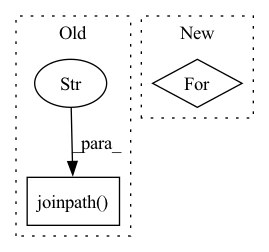

Pattern ID :28500
Before Change
def get_encoder_decoder_tokenizer():
Function to get a default pre-trained version of T5 in ONNX ready for use
path_t5_encoder = _models_path.joinpath("t5-encoder.onnx" )
path_t5_decoder = _models_path.joinpath("t5-decoder-with-lm-head.onnx")
_models_path.mkdir(exist_ok=True)
After Change
decoder_sess, encoder_sess = _handle_creation_of_sessions()
except:
filelist = glob.glob(os.path.join(_models_path, "*"))
for f in filelist:
os.remove(f)
decoder_sess, encoder_sess = _handle_creation_of_sessions()
// The tokenizer should be the one you trained in the case of fine-tuningIn pattern: SUPERPATTERN
Frequency: 3
Non-data size: 2
Instances Fragment ID: 84380226
Project Name: abelriboulot/onnxt5
Commit Name: ad046015912df713e3512bd5598b44422a58a1af
Time: 2020-08-12
Author: abel@kta.io
File Name: onnxt5/api.py
M Class Name: AnonimousClass
N Class Name: AnonimousClass
M Method Name: get_encoder_decoder_tokenizer(0)
N Method Name: get_encoder_decoder_tokenizer(0)
M Parent Class:
N Parent Class:
M File Name: onnxt5/api.py
N File Name: onnxt5/api.py
M Start Line: 21
M End Line: 38
N Start Line: 22
N End Line: 31
Before Change
extra_files = []
if etc_path is not None:
etc_path = Path(etc_path).resolve()
mount_yaml = Path(__file__).parent.joinpath("mount.yaml" )
extra_files.append(str(mount_yaml))
env = {
"INTEGRATIONS_HOST_PORT": str(port),
"DET_ETC_ROOT": str(etc_path),After Change
hasura_secret=hasura_secret,
delete_db=delete_db,
)
for agent_number in range(num_agents):
agent_name = cluster_name + f"-agent-{agent_number}"
labels = {"determined.cluster": cluster_name}
agent_up(
master_host=get_proxy_addr(), Fragment ID: 84380225
Project Name: determined-ai/determined
Commit Name: 18e0bca969b02dcd34094db89df72f57ce7b2919
Time: 2020-04-14
Author: david@determined.ai
File Name: deploy/determined_deploy/local/cluster_utils.py
M Class Name: AnonimousClass
N Class Name: AnonimousClass
M Method Name: fixture_up(9)
N Method Name: fixture_up(7)
M Parent Class:
N Parent Class:
M File Name: deploy/determined_deploy/local/cluster_utils.py
N File Name: deploy/determined_deploy/local/cluster_utils.py
M Start Line: 90
M End Line: 106
N Start Line: 123
N End Line: 150
Before Change
df["date"] = pd.to_datetime(df["date"])
df = df.astype(float, errors="ignore")
df["adjclose"] = df["close"]
df.to_csv(self.save_dir.joinpath("sh000300.csv" ) , index=False)
class Run:After Change
logger.info(f"getting data: {i+1}")
stock_list = self._collector(stock_list)
logger.info(f"{i+1} finish.")
for _symbol, _df_list in self._mini_symbol_map.items():
self.save_stock(_symbol, max(_df_list, key=len))
logger.warning(f"less than {MIN_NUMBERS_TRADING} stock list: {list(self._mini_symbol_map.keys())}")
Fragment ID: 84380223
Project Name: microsoft/qlib
Commit Name: c825c99c2ceb4b0dd23ad121231d7a8399e6b9de
Time: 2020-09-26
Author: zhu.pengrong@foxmail.com
File Name: scripts/data_collector/yahoo/collector.py
M Class Name: YahooCollector
N Class Name: YahooCollector
M Method Name: collector_data(1)
N Method Name: collector_data(1)
M Parent Class:
N Parent Class:
M File Name: scripts/data_collector/yahoo/collector.py
N File Name: scripts/data_collector/yahoo/collector.py
M Start Line: 112
M End Line: 118
N Start Line: 130
N End Line: 135